抽象，是将数据与程序，以其语义来呈现外观，隐藏其实作细节，从而减少程序的复杂度。--维基百科
简单地说，抽象，就是命名。变量，是有名字的值，零级抽象。函数，是有名字的运算过程，一级抽象。类，是有名字的数据模板，二级抽象。--Simple L
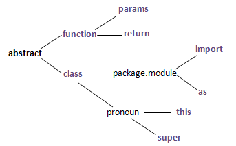
以Fibonacci数列为例：费波那契数列由0和1开始，之后的数就由之前的两数相加。
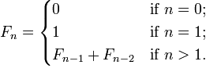
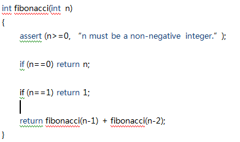 以上是静态编程语言的书写风格，变量的数据类型必须声明，如n的类型是int， fibonacci的返回值类型是int。静态编程语言有C, C++, C#, Java。
静态编程语言如楷书般严谨端庄，动态编程语言则如行书般简便灵动。动态编程语言的变量的数据类型由其值决定。动态编程语言有Python, Ruby, Lisp。
Python如行书：
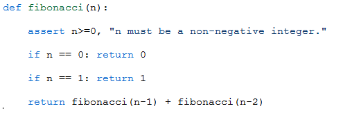
Lisp如草书 ： :D
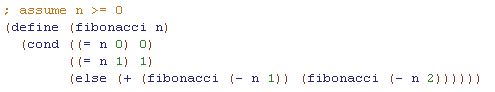
lambda，是无名函数, 可以像值一样赋值于变量。如要可以定义函数sum(f, n)：f 从i=1到i=n求和。
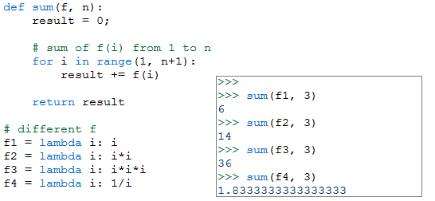
当f = lambda(i)=>i 时，sum(f,n)是自然数求和, 如sum(f,3)为1+2+3 = 6.
当f = lambda(i)=>i*i 时，sum(f,n)是平方和，如sum(f,3)为1+4+9 = 14.
当f = lambda(i)=>i*i*i 时，sum(f,n)是立方和，如sum(f,3)为1+8+27=36
这样sum作为一个广泛的概念，其实现可以独立于不同的f。
算法复杂度：一个算法性能的好坏取决于耗费的时间Time和空间Space。 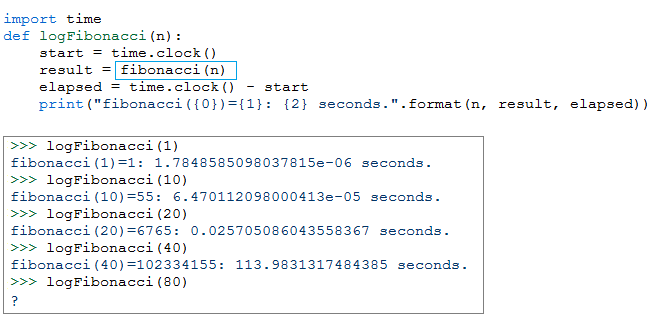
以fibonacci例，通过运行结果可知，运行一次fibonacci (n) 的具体时间 (不具有普遍意义)。随着n增大，时间T剧增，以致fibonacci (80) 已经无法返回结果。但原因是什么呢？
其实算法的运行时间T是由其基本步骤的执行次数t确定的。 Fibonacci的t (n) = 1 + 1 + 1 + t (n-1) + t (n-2), t (0) =2, t (1) =3。假定常量可忽略，则t (n) = t (n-1) + t (n-2)。由树形图可知，根t (n) 是所有叶节点t(1) 或t(0)的和。如果假定树的叶节点是满的，则t(n)=2n（树的每一层都是上一层的2倍）。这是指数级增长，威力非常巨大，可以让单细胞在50次分裂后产生一个完整的人。至此，我们大概知道fibonacci递归算法的性能为什么很糟糕。 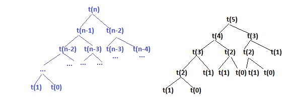
其实t (n) = t (n-1) + t (n-2)是未满的树，所以比2n要小。可以求t (n)的通项公式，由此可知是O(1.618n)。这里我们引入了大O的概念，t (n) = O (1.618n) ，就是说1.618n是t (n) 渐近上限。
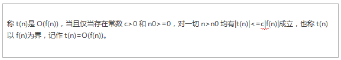
按照定义我们也可以说t(n) = O(2n)， 但O(1.618n)更准确。所以fibonacci递归算法的T(n) = O(1.618n)，指数级增长。
与递归算法相比较，我们再看fibonacci的迭代算法： 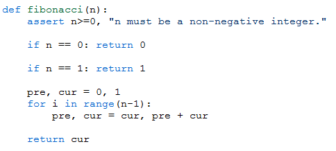 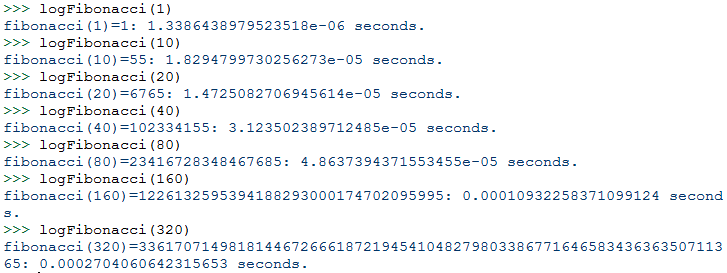 通过运行结果可知，得到fibonacci (320) 这个天文数字不到1毫秒。通过算法分析可知T (n) = O (n) ，线性增长
矩阵法求fibonacci(n)，T (n) = O (log2 n)，对数级增长。设对数x=log2 n，那么2x=n，也就是说x是1不断乘2直到等于n的次数。 例子从320到1折半多少次？设解为x, 那么(256=28) ≤ (320=2x) ≤ (512=29)，8≤x≤9, 所以x≈8。也就是说线性算法需要320次，对数算法只需8次。 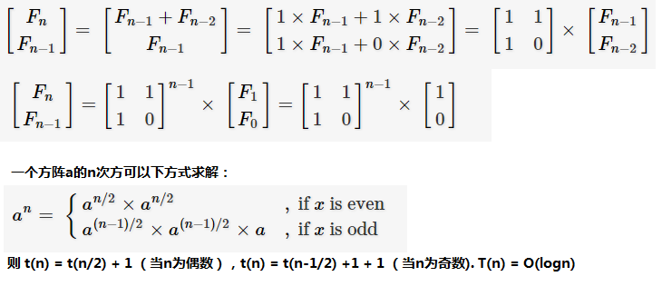 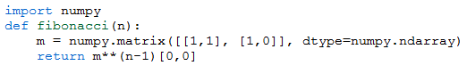
如果我们知道Fibonacci的通项公式，可以写出常数级T(n) = O(1)算法吗？因为公式里涉及到n次方运算，理论上应该是T (n) = O (log2 n) 。 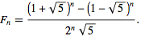 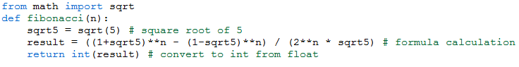 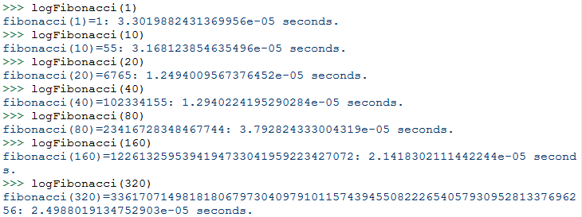 可是运算时间似乎稳定在10-5秒范围内。难道真的是常量级吗？但finobacci(80)的值是错的，之后的值也是错的。因为Fn里有无理数和除法运算，会有精度问题。
常用的算法复杂度从小到大如下
| 名称 | 时间T(n) | 算法形状 |
| 常数阶 | O(1) | 直线从上到下，无循环，无递归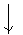 |
| 对数阶 | O(log n) | 线段不断被折半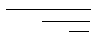 |
| 线性阶 | O(n) | 圆形单循环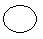 |
| k次方阶 | O(n^k) | 多重圆嵌套循环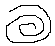 |
| 指数阶 | O(2^n) | 树形从根到叶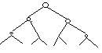 |
类的定义形式如下： 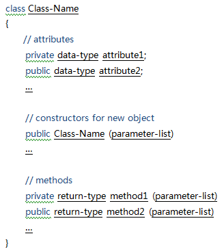
面向对象有三个重要概念：封装 (encapsulation)，继承 (inheritance)，多态 (polymorphism)。 封装就是把一组相关的属性和方法放在类里面，并以private和public设定它们的可访问范围。private表示只在类里面可访问，public表示随处可访问。继承则是为了获得已有类的功能，比如彩色杯ColorCup可以通过继承来重用杯子Cup的功能，如果Cup有protected的成员，则它们也是可以被ColorCup访问的。多态则是为了实现同一类的同一方法有不同的效果，比如容器Container，它声明但不直接实现pour方法，而其实现类杯子Cup和瓶子Bottle都各自实现了pour方法，则当我们把Cup和Bottle都当作Container看待时，Container的pour方法就有不同的效果。在纯面向对象的编程语言中，基本数据也是对象，如0是整数对象，’A’是字符对象。 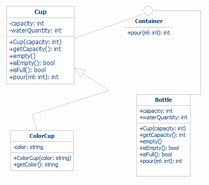
以杯为例（楷书） 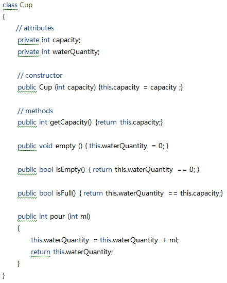
于是我们可以通过new来创建一个杯子： 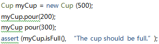
Python（行书）： 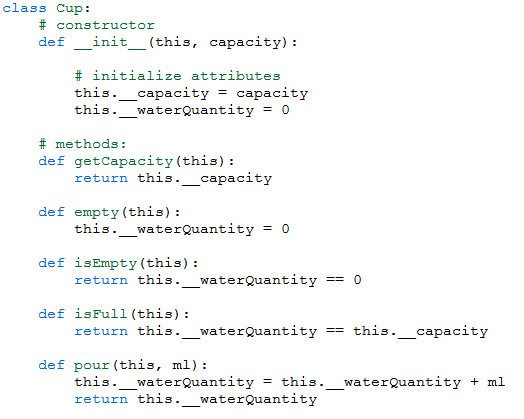 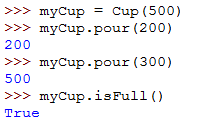
Lisp（草书）： 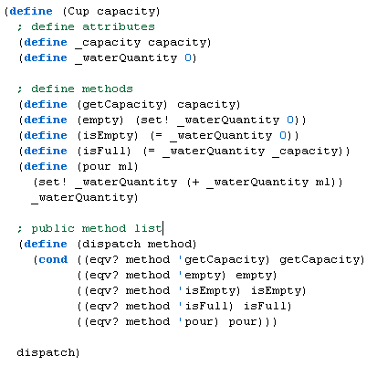 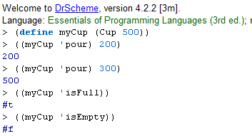